11.4 Auxiliary Functions that Generalize
On occasion an auxiliary function is not just a small helper function but a solution to a more general problem. Such auxiliaries are needed when a problem statement is too narrow. As programmers work through the steps of the design recipe, they may discover that the “natural” solution is wrong. An analysis of this broken solution may suggest a slightly different, but more general, problem statement, as well as a simple way of using the solution to the general problem for the original one.
Paul C. Fisher suggested this problem.
We illustrate this idea with a solution to the following problem:
Sample Problem Design a function that adds a polygon to a given scene.
Just in case you don’t recall your basic geometry (domain) knowledge, we add a (simplistic) definition of polygon:
A polygon is a planar figure with at least three points (not on a straight line) connected by three straight sides.
One natural data representation for a polygon is thus a list of Posns. For example, the following two definitions
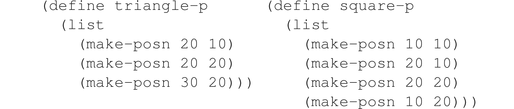
introduce a triangle and a square, just as the names say. Now you may wonder how to interpret '() or (list (make-posn 30 40)) as polygons, and the answer is that they do not describe polygons. Because a polygon consists of at least three points, a good data representation of polygons is the collection of lists with at least three Posns.
Following the development of the data definition for non-empty lists of temperatures (NEList-of-temperatures, in chapter 9.2), formulating a data representation for polygons is straightforward:
; A Polygon is one of:
; -- (list Posn Posn Posn)
; -- (cons Posn Polygon)
The first clause says that a list of three Posns is a Polygon, and the second clause says that consing a Posn onto some existing Polygon creates another one. Since this data definition is the very first to use list in one of its clauses, we spell it out with cons just to make sure you see this conversion from an abbreviation to long-hand in this context:
; a Polygon is one of:
; -- (cons Posn (cons Posn (cons Posn '())))
; -- (cons Posn Polygon)
The point is that a naively chosen data representation—plain lists of Posns—may not properly represent the intended information. Revising the data definition during an initial exploration is normal; indeed, on occasion such revisions become necessary during the rest of the design process. As long as you stick to a systematic approach, though, changes to the data definition can naturally be propagated through the rest of the design.
The second step calls for the signature, purpose statement, and header of the function. Since the problem statement mentions just one task and no other task is implied, we start with one function:
; a plain background image
(define MT (empty-scene 50 50))
; Image Polygon -> Image
; renders the given polygon p into img
(define (render-poly img p)
img)
The additional definition of MT is called for because it simplifies the formulation of examples.
For the first example, we use the above-mentioned triangle. A quick look in the 2htdp/image library suggests scene+line is the function needed to render the three lines for a triangle:
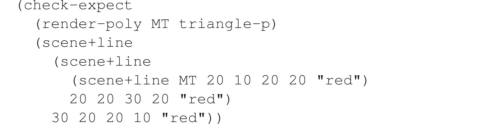
The innermost scene+line renders the line from the first to the second Posn; the middle one uses the second and third Posn; and the outermost scene+line connects the third and the first Posn.
Of course, we experimented in DrRacket’s interactions area to get this expression right.
Given that the first and smallest polygon is a triangle, then a rectangle or a square suggests itself as the second example. We use square-p:
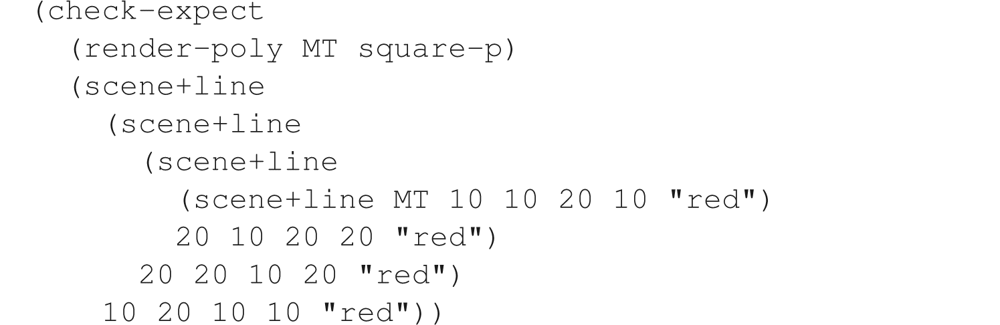
A square is just one more point than a triangle, and it is easy to render. You may also wish to draw these shapes on a piece of graph paper.
The construction of the template poses a challenge. Specifically, the first and the second questions of figure 52 ask whether the data definition differentiates distinct subsets and how to distinguish among them. While the data definition clearly sets apart triangles from all other polygons in the first clause, it is not immediately clear how to differentiate the two. Both clauses describe lists of Posns. The first describes lists of three Posns, while the second one describes lists of Posns that have at least four items. Thus one alternative is to ask whether the given polygon is three items long:
(= (length p) 3)
Using the long-hand version of the first clause, that is,
(cons Posn (cons Posn (cons Posn '())))
suggests a second way to formulate the first condition, namely, checking whether the given Polygon is empty after using three rest functions:
(empty? (rest (rest (rest p))))
Since all Polygons consist of at least three Posns, using rest three times is legal. Unlike length, rest is a primitive, easy-to-understand operation with a clear operational meaning. It selects the second field in a cons structure and that is all it does.
It is truly better to formulate conditions in terms of built-in predicates and selectors than your own (recursive) functions. See intermezzo 5 for an explanation.
The rest of the questions in figure 52 have direct answers, and thus we get this template:
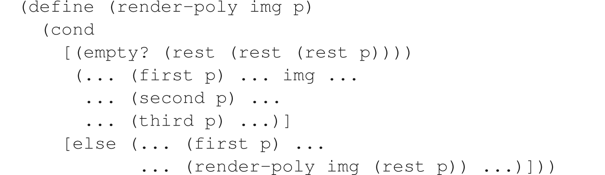
Because p describes a triangle in the first clause, it must consist of exactly three Posns, which are extracted via first, second, and third. In the second clause, p consists of a Posn and a Polygon, justifying (first p) and (rest p). The former extracts a Posn from p, the latter a Polygon. We therefore add a self-referential function call around it; we must also keep in mind that dealing with (first p) in this clause and the three Posns in the first clause may demand the design of an auxiliary function.
Now we are ready to focus on the function definition, dealing with one clause at a time. The first clause concerns triangles, which suggests a straightforward answer. Specifically, there are three Posns and render-poly should connect the three in an empty scene of 50 by 50 pixels. Given that Posn is a separate data definition, we get an obvious wish-list entry:
; Image Posn Posn -> Image
; draws a red line from Posn p to Posn q into im
(define (render-line im p q)
im)
Using this function, the first cond clause in render-poly is this:
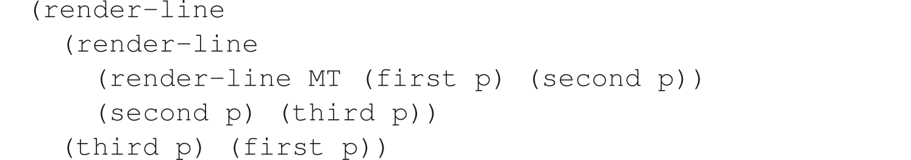
This expression obviously renders the given Polygon p as a triangle by drawing a line from the first to the second, the second to the third, and the third to the first Posn.
The second cond clause is about Polygons that have been extended with one Posn. In the template, we find two expressions, and, following figure 53, we remind ourselves of what these expressions compute:
1. (first p) extracts the first Posn;
2. (rest p) extracts the Polygon from p; and
3. (render-polygon img (rest p)) renders (rest p), which is what the purpose statement of the function says.
The question is how to use these pieces to render the given Polygon p.
One idea that may come to mind is that (rest p) consists of at least three Posns. It is therefore possible to extract at least one Posn from this embedded Polygon and to connect (first p) with this additional point. Here is what this idea looks like with BSL+ code:
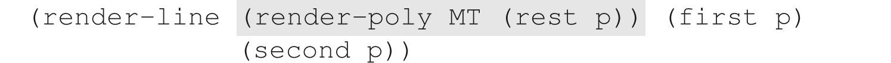
As mentioned, the highlighted sub-expression renders the embedded Polygon in an empty 50 by 50 scene. The use of render-line adds one line to this scene, from the first to the second Posn of p.
Our analysis suggests a rather natural, complete function definition:
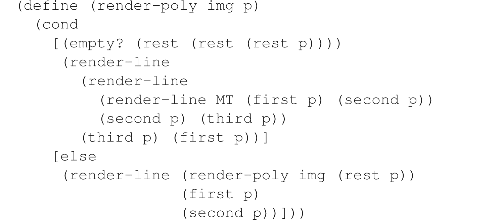
Designing render-line is the kind of problem that you solved in the first part of the book. Hence we just provide the final definition so that you can test the above function:
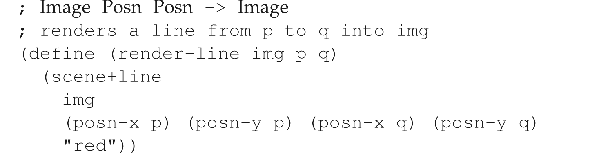
Stop! Develop a test for render-line.
Lastly, we must test the functions. The tests for render-poly fail. On the one hand, the test failure is fortunate because it is the purpose of tests to find problems before they affect regular consumers. On the other hand, the flaw is unfortunate because we followed the design recipe, we made fairly natural choices, and yet the function doesn’t work.
Stop! Why do you think the tests fail? Draw an image of the pieces in the template of render-poly. Then draw the line that combines them. Alternatively, experiment in DrRacket’s interactions area:
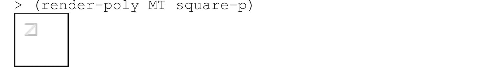
The image shows that render-polygon connects the three dots of (rest p) and then connects (first p) to the first point of (rest p), that is, (second p). You can easily validate this claim with an interaction that uses (rest square-p) directly as input for render-poly:
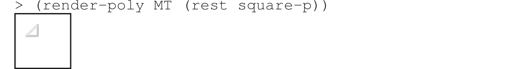
In addition, you may wonder what render-poly would draw if we added another point, say, (make-posn 40 30), to the original square:
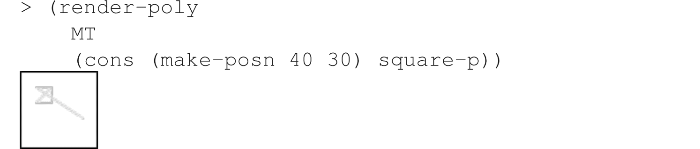
Instead of the desired pentagon, render-polygon always draws the triangle at the end of the given Polygon and otherwise connects the Posns that precede the triangle.
While the experiments confirm the problems of our design, they also suggest that the function is “almost correct.” It connects the successive dots specified by a list of Posns, and then it draws a line from the first to the last Posn of the trailing triangle. If it skipped this last step, the function would just “connect the dots” and thus draw an “open” polygon. By connecting the first and the last point, it could then complete its task.
Put differently, the analysis of our failure suggests a two-step solution:
1. Solve a more general problem.
2. Use the solution to this general problem to solve the original one.
We start with the statement for the general problem:
Sample Problem Design a function that draws connections between a given bunch of dots and into a given scene.
Although the design of render-poly almost solves this problem, we design this function mostly from scratch. First, we need a data definition. Connecting the dots makes no sense unless we have at least a couple of dots. To keep things simple, we go with at least one dot:
; An NELoP is one of:
; -- (cons Posn '())
; -- (cons Posn NELoP)
Second, we formulate a signature, a purpose statement, and a header for a “connect the dots” function:
; Image NELoP -> Image
; connects the dots in p by rendering lines in img
(define (connect-dots img p)
MT)
Third, we adapt the examples for render-poly for this new function. As our failure analysis says, the function connects the first Posn on p to the second one, the second one to the third, the third to the fourth, and so on, all the way to the last one, which isn’t connected to anything. Here is the adaptation of the first example, a list of three Posns:
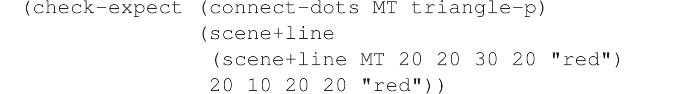
The expected value is an image with two lines: one from the first Posn to the second one, and another one from the second to the third Posn.
Exercise 191. Adapt the second example for the render-poly function to connect-dots. 
Fourth, we use the template for functions that process non-empty lists:
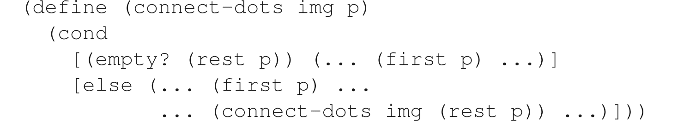
The template has two clauses: one for lists of one Posn and the second one for lists with more than one. Since there is at least one Posn in both cases, the template contains (first p) in both clauses; the second one also contains (connects-dots (rest p)) to remind us of the self-reference in the second clause of the data definition.
The fifth and central step is to turn the template into a function definition. Since the first clause is the simplest one, we start with it. As we have already said, it is impossible to connect anything when the given list contains only one Posn. Hence, the function just returns MT from the first cond clause. For the second cond clause, let us remind ourselves of what the template expressions compute:
1. (first p) extracts the first Posn;
2. (rest p) extracts the NELoP from p; and
3. (connect-dots img (rest p)) connects the dots in (rest p) by rendering lines in img.
From our first attempt to design render-poly, we know connect-dots needs to add one line to the result of (connect-dots img (rest p)), namely, from (first p) to (second p). We know that p contains a second Posn because otherwise the evaluation of cond would have picked the first clause.
Putting everything together, we get the following definition:
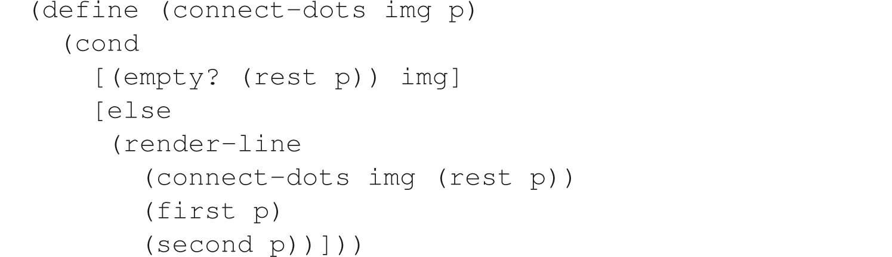
This definition looks simpler than the faulty version of render-poly, even though it copes with two more lists of Posns than render-poly.
Conversely, we say that connect-dots generalizes render-poly. Every input for the latter is also an input for the former. Or in terms of data definitions, every Polygon is also an NELoP. But, there are many NELoPs that are not Polygons. To be precise, all lists of Posns that contain two items or one belong to NELoP but not to Polygon. The key insight for you is, however, that just because a function has to deal with more inputs than another function does not mean that the former is more complex than the latter; generalizations often simplify function definitions.
This argument is informal. If you ever need a formal argument for such claims about the relationship between sets or functions, you will need to study logic. Indeed, this book’s design process is deeply informed by logic, and a course on logic in computation is a natural complement. In general, logic is to computing what analysis is to engineering.
As spelled out above, render-polygon can use connect-dots to connect all successive Posns of the given Polygon; to complete its task, it must then add a line from the first to the last Posn of the given Polygon. In terms of code, this just means composing two functions: connect-dots and render-line, but we also need a function to extract the last Posn from the Polygon. Once we are granted this wish, the definition of render-poly is a one-liner:
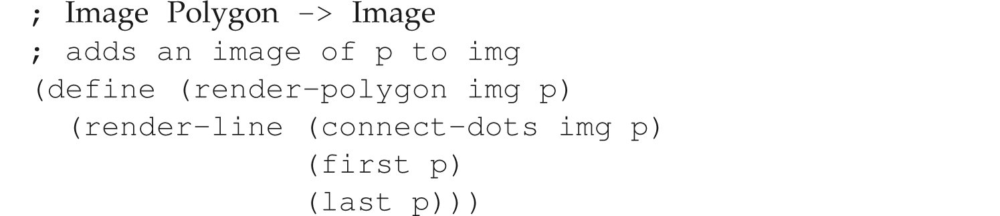
Formulating the wish-list entry for last is straightforward:
; Polygon -> Posn
; extracts the last item from p
Then again, it is clear that last could be a generally useful function and we might be better off designing it for inputs from NELoP:
; NELoP -> Posn
; extracts the last item from p
(define (last p)
(first p))
Stop! Why is it acceptable to use first for the stub definition of last?
Exercise 192. Argue why it is acceptable to use last on Polygons. Also argue why you may adapt the template for connect-dots to last:
(define (last p)
(cond
[(empty? (rest p)) (… (first p) …)]
[else (… (first p) … (last (rest p)) …)]))
Finally, develop examples for last, turn them into tests, and ensure that the definition of last in figure 73 works on your examples.
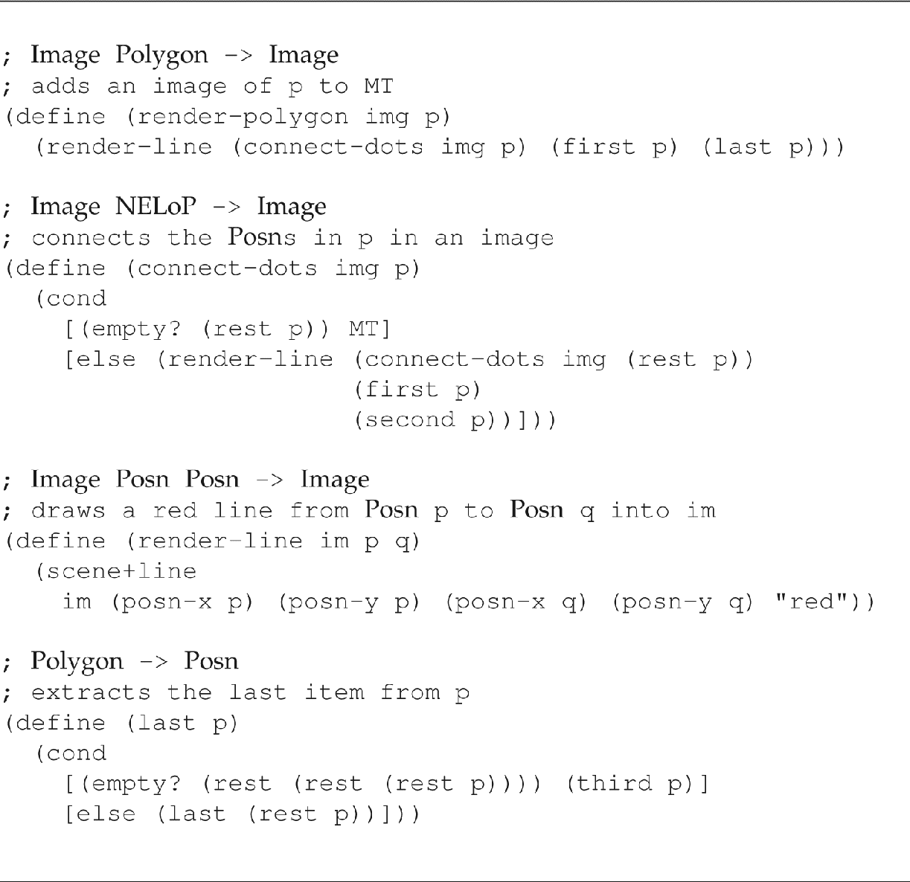
Figure 73: Drawing a polygon
In summary, the development of render-poly naturally points us to consider the general problem of connecting a list of successive dots. We can then solve the original problem by defining a function that composes the general function with other auxiliary functions. The program therefore consists of a relatively straightforward main function—render-poly—and complex auxiliary functions that perform most of the work. You will see time and again that this kind of design approach is common and a good method for designing and organizing programs.
Exercise 193. Here are two more ideas for defining render-poly:
• render-poly could cons the last item of p onto p and then call connect-dots.
• render-poly could add the first item of p to the end of p via a version of add-at-end that works on Polygons.
Use both ideas to define render-poly; make sure both definitions pass the test cases.
Exercise 194. Modify connect-dots so that it consumes an additional Posn to which the last Posn is connected. Then modify render-poly to use this new version of connect-dots.
Naturally, functions such as last are available in a full-fledged programming language, and something like render-poly is available in the 2htdp/image library. If you are wondering why we just designed these functions, consider the titles of both the book and this section. The goal is not (just) to design useful functions but to study how code is designed systematically. Specifically, this section is about the idea of generalization in the design process; for more on this idea see part III and part VI.